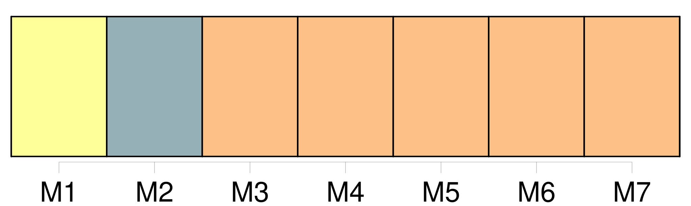

Longueur nb maillons : 52 mentions |
  |
Et comme si cela eût été une chose convenue depuis longtemps, [les deux enfants] se prirent par la main et [se mirent] à courir de toutes leurs forces, suivis du chien qui [les] dépassait, revenait en aboyant, manquait de [les] faire tomber, et repartait pour revenir encore. À bout de souffle, [ils] s'arrêtèrent enfin. Assis près des pommiers dont les fleurs tournoyaient au-dessus de leurs têtes comme de fins papillons, [ils] jouaient à les attraper. [13 phrases] Et [tous deux] , comme à l'annonce d'un malheur, firent silence un long moment. [38 phrases] En [les] voyant s'éloigner, Tou, qui ne pouvait sauter la grille, poussa de véritables clameurs. [4 phrases]
Il saura bien [nous] retrouver! [1 phrases]
Et peu de temps après, la langue pendante et le souffle court, il rejoignait dans l'eau claire [les deux autres] [qui] barbottaient en riant comme de jeunes fous. [63 phrases] Octobre était bien près de finir lorsque [Douce et Noël] purent enfin se retrouver. [25 phrases] [Ils] ne dirent plus rien, et pendant un moment il y eut sur [eux] comme une tristesse qui semblait entrer avec la bruine pour assombrir encore la pièce, déjà si sombre, où [ils] se tenaient. [27 phrases] » Et [tous deux] entrèrent ensemble dans la pièce dont la porte s'était ouverte sans aucune difficulté. Ce n'était pas le grenier ; [ils] avaient devant [eux] une grande chambre, blanchie à la chaux, meublée d'un lit, d'une vaste armoire à ferrures ouvragées, et d'une lourde commode, à dessus de marbre blanc, contre laquelle s'appuyait un joli berceau d'osier fin. [24 phrases] [Ils] redescendirent. [Ils] avaient faim. [1 phrases] Du pain, du fromage et quelques fruits, et [tous deux] , oubliant le mauvais temps du matin, sautèrent une fois de plus la grille et [s'en allèrent] vers l'étang. [41 phrases]
Puis, sa ligne posée, le père tira de sa poche des friandises qu'il partagea entre [les deux enfants] [2 phrases]
Et, tandis que le père range les lignes, [Noël et Douce] , courant et sautant, regagnent le verger où le chien [les] attend, dressé de toute sa hauteur contre la grille du potager. [1 phrases]
L'automne, avec ses brouillards et ses pluies, l'hiver, avec sa neige et ses gelées, séparèrent [les deux enfants] plus sûrement encore que la présence constante au verger du père Lumière. [94 phrases]
Mère Clarisse recommandait :
[Ils] promettaient, mais à la façon dont ils partaient tous les trois on pouvait croire qu'ils feraient beaucoup de chemin avant de s'arrêter. [2 phrases] À l'heure du goûter, elle emplissait les gobelets [des enfants] à la toute petite source qui se cachait sous les herbes pour creuser son ruisseau à sa guise. [1 phrases]
Il ne s'arrêtait guère que pour sortir le goûter de sa poche, et faire des recommandations [aux enfants] ; et, tournant le dos, il disparaissait aussi lentement qu'il était venu. [8 phrases] [Tous deux] , épaule contre épaule, avec le chien couché par moitié sur [leurs] jambes, [ils] en oubliaient le jeu et la pêche. Dès que la mère Clarisse avait fini une chanson, vite [ils] en réclamaient une autre. [Ils] ne la prenaient pas au dépourvu, elle en savait tant!! [14 phrases] Il en était de même pour l'étang autour duquel [ils] s'amusaient à courir. [16 phrases]
Une après-midi que le père s'attardait à regarder [les deux enfants] au milieu de l'étang, Noël lui cria : [3 phrases]
⁂ [93 phrases]
Il aboie impatiemment comme s'il [leur] disait :
Et dès qu' [ils] se sont rejoints, il tourne lui -même et saute lourdement. [Les jeunes gens] rient, et malgré la gêne qui [les] sépare, [ils] ne songent pas à tourner ni à courir. [Ils] marchent au contraire gravement, n'osant ni parler ni se regarder.
Tou a enfin compris que l'heure est au calme, il se glisse entre [eux] dans l'espace libre et marche sagement. [3 phrases] Peu à peu la parole [leur] revient. [1 phrases] Lorsqu' [ils] sont en vue de la grille du potager, Églantine s'arrête, et Noël comprend qu'il ne doit pas l'accompagner plus loin. [28 phrases] [Ils] parlèrent d'Églantine en attendant le grand-père qui n'était pas encore rentré. [22 phrases]
[Les jeunes gens] reprenaient l'habitude de se baigner dans l'étang, tout comme [ils] avaient repris [leur] tutoiement familier, et mère Clarisse ses chansons. |

|
La ressource peut être téléchargée sur la page Ortolang
Si vous avez des questions ou vous voyez des erreurs, merci d'envoyer un mail à silvia.federzoni89@gmail.com
Site développé par S. Federzoni (contact)